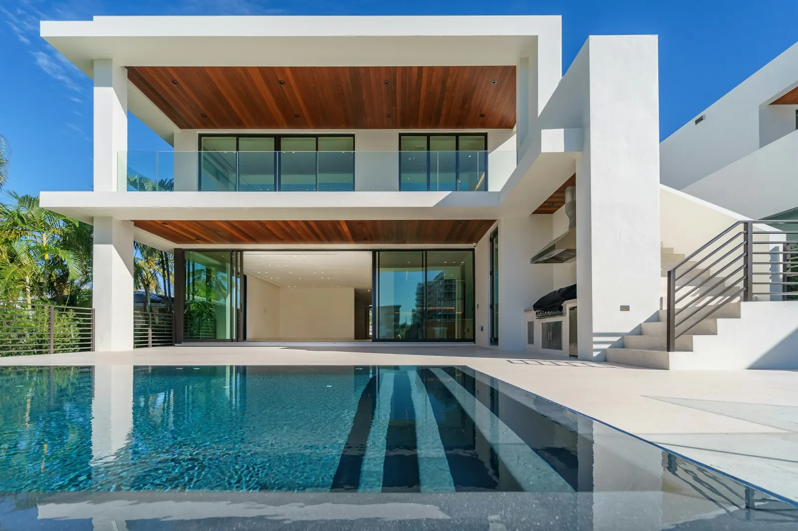

Residencial · Interiores
Casa Pátio
Quatro suítes em volta de um pátio com jabuticabeira: todos os cômodos recebem luz e ventilação cruzada.
Projeto ilustrativo · dados fictícios

A ideia por trás do espaço
O lote é estreito e comprido. Abrimos um pátio no meio da casa e organizamos tudo em volta dele, o que trouxe sol da manhã para as suítes e ventilação cruzada para o estar.
O estar tem pé-direito duplo e lareira. Nos banhos, a pedra é a mesma do piso externo, para a casa parecer uma coisa só.
Paleta do projeto
- Pintura à base de calparedes internas
- Cumarudeck, forro e portas
- Travertino romanopiso e bancadas
- Linho crucortinas e estofados
- Vidro extraclaroesquadria piso-teto
Cores aproximadas na tela; a escolha final é feita com amostra física.
Galeria
Toque numa foto para ampliar.
Inicie seu projeto.
Primeira conversa sem custo
Conte o que você quer construir ou reformar. Respondemos em até dois dias úteis com os próximos passos e uma primeira conversa com a arquiteta responsável.